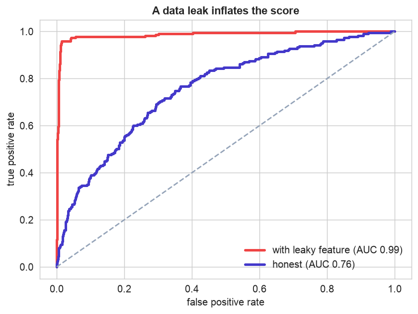
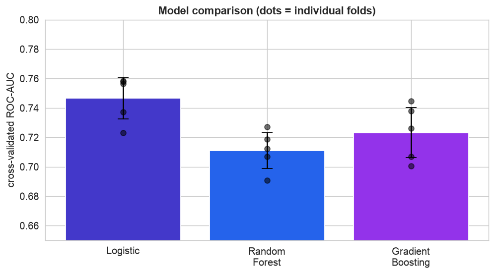
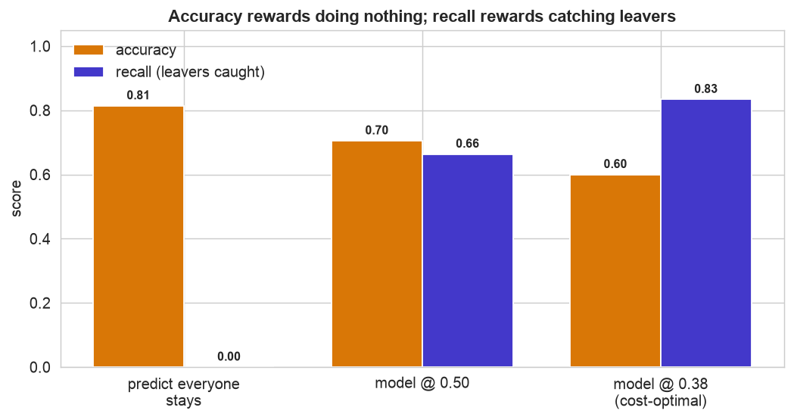
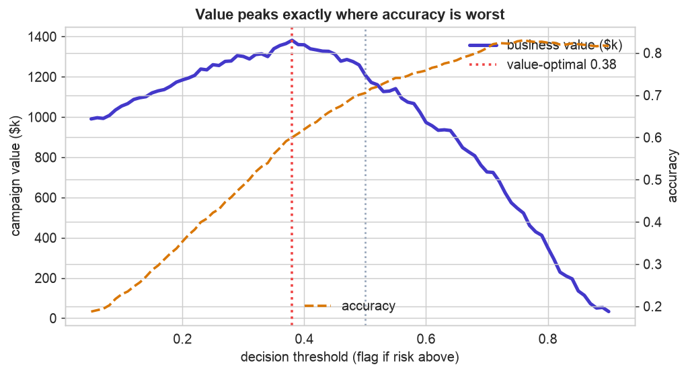
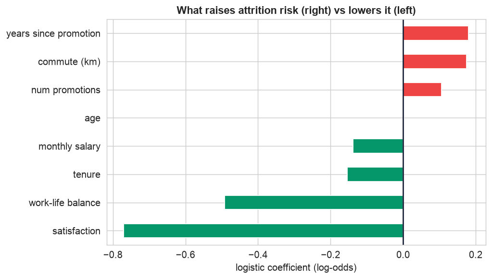

A trained model is not a decision. Between the two lie the choices that actually create, or destroy, value: is the score honest or inflated by a leak? Is one model really better than another, or just luckier on this split? Which metric matches the goal, and where should the threshold sit? This capstone uses an attrition problem to work through those questions, and its lessons apply to every model in the book.
The model is the easy part. The decisions that matter come after it: Step 5 catches a data leak that fakes a 0.99 AUC; Step 7 shows accuracy would lead you to help nobody; and Step 8 sets the threshold where the money is, exactly where accuracy is worst.
The 12-Step Method
The same repeatable loop, now with the spotlight on evaluation and decision-making. The companion notebook runs all twelve steps; the sections below tell the story and show the plots.
One row per employee with age, tenure_years,
monthly_salary, satisfaction, work_life_balance, overtime,
num_promotions, years_since_promotion, commute_km, job_role, a
leaky exit_process_started, and the target attrition (about 19% left).
Define, Collect, Inspect, Clean (Steps 1–4)
Define the objective
An HR team wants to reduce attrition by offering retention support to at-risk employees. The model's job is not to be "accurate", it is to help decide who to talk to, given that losing an employee is expensive and a conversation is cheap. Keeping that decision in view is what makes every later choice right or wrong.
Collect the data
A standard HR export, one row per employee with the usual signals, and one column that will turn out to be a trap.
Inspect the data
About 19% of employees left, so predicting "stays" for everyone is already 81%
accurate, the first sign accuracy will mislead. And one feature, exit_process_started,
correlates far more strongly with attrition (0.92) than any real signal, employees for whom it is 1 leave over 90% of
the time.
Clean the data
Light cleaning (dedupe, impute a few missing values), and one deliberate exclusion: exit_process_started
is left out of the features. The offboarding process is only started after someone resigns,
so for a current employee it is always 0. Using it would build a model that looks brilliant in testing and is useless
in production, the definition of a leak.
Prove the Leak (Step 5)
It is worth quantifying the leak, both to understand its danger and to build the habit of distrusting a score that looks too good.

Leakage is the most dangerous evaluation mistake. Including
exit_process_started
rockets the AUC to 0.99 (red), a model that would collapse to 0.76 (indigo) the
moment it met a real, current employee. The tell was the too-good score; the fix was asking when each
feature becomes known. Before trusting any high number, ask: could this feature have been recorded only after the
outcome? We proceed with the honest feature set.Compare Models, Choose the Metric (Steps 6–7)
Compare models fold by fold
The candidate models land within a few points of each other, close enough that on one lucky split any could look best. The disciplined check is cross-validation, examined fold by fold.

Do not over-read a single split. Each bar is a model's mean cross-validated AUC; the dots are the five individual folds. Logistic regression (0.75) beats gradient boosting (0.72) in all five folds, so its edge is consistent and real, not a fluke of one split, and it is the simpler, more interpretable model. That makes it the clear choice. Had the per-fold differences flipped signs, we would have called it a tie and kept the simpler model anyway.
Choose the metric that matches the decision
Now the pivotal choice. Which number tells us the model is good? On this problem, the obvious one, accuracy, points in exactly the wrong direction.

Accuracy is the wrong yardstick here. Predicting "stays" for everyone scores 0.81 accuracy, higher than the working model, while catching zero at-risk employees (recall 0). As we lower the threshold to catch more leavers (recall rises, indigo), accuracy (amber) falls. If we optimized accuracy we would ship the do-nothing model and help no one. The metric has to reflect the goal, catching leavers, so we judge by recall, PR-AUC, and ultimately dollar value.
Decide, Interpret & Communicate (Steps 8–12)
From score to decision: threshold by cost
The threshold is where value is made. With a departure costing far more than a conversation (say $25,000 versus $1,500, and retention keeping about half of would-be leavers), the profit-maximizing cutoff is nowhere near 0.5.

Accuracy and value point in opposite directions. The business-value curve (indigo) peaks around a threshold of 0.38, catching most at-risk employees. But the accuracy line (amber, dashed) rises toward the right, exactly where value collapses, and is highest when you flag no one and create zero value. The chapter in one picture: set the threshold by the decision's economics, never by accuracy.
Interpret the drivers
The model also yields insight, arguably more valuable to HR than the predictions.

Insight, not just a score. Low satisfaction and poor work-life balance are the strongest departure signals, followed by a long time since the last promotion, a long commute, and overtime, while higher salary and tenure hold people. This points HR at the levers, career progression, workload, flexibility, that reduce attrition at the source, not just a list of who to chase.
Deploy, monitor, and communicate
The saved model scores a new employee, the unhappy, overworked junior with a long commute is flagged (88% risk); the well-paid, satisfied, recently-promoted senior is not (5%), and the result comes with a one-paragraph summary a manager can act on. In production, a holdout control group left uncontacted confirms whether the retention effort actually works, because a good prediction does not guarantee a good outcome. That translation, from probabilities to a sentence a decision-maker trusts, is the final and most under-rated step of any project.
Communicate: the Plain-English Write-Up (Step 12)
For a non-technical reader
What is this? We built a tool that flags the employees most likely to leave, so HR can focus retention effort where it will do the most good, and, just as importantly, we made sure we were measuring the tool the right way.
What goes in, and what comes out
Inputs: the employee information HR already has, satisfaction, salary, workload, commute, promotion history, and so on. Output: a leaving-risk score that becomes a "reach out / no action" recommendation.
The decisions we made, and why
- ✓We threw out a column that looked magically predictive. It recorded the start of the exit paperwork, which only happens after someone has already quit, so it would have made the tool look perfect in testing and useless in real life. Spotting that trap ("leakage") was the most important step.
- ✓We refused to judge the tool on plain accuracy. Because only about one in six people leave, a tool that says "nobody will leave" is right 81% of the time while helping no one. We measured how many actual leavers it catches instead.
- ✓We chose how aggressively to flag people using money, since losing an employee costs far more than a conversation, it pays to reach out to more people, even at the cost of some false alarms.
How good is it, in plain terms
The tool is meaningfully better than guessing at spotting who is likely to leave (though people are hard to predict, so it is not close to perfect). Used at the right sensitivity, it catches most would-be leavers while HR contacts only a manageable slice of the workforce.
The big idea
The hard part of this project was not building the model, it was evaluating it honestly. Bottom line: a model is not a decision. The value is created in catching leaks, choosing the right yardstick, setting the cutoff by cost, and explaining the result, and the drivers (satisfaction, workload, career progress) point at real fixes.
Run the entire project in Python
The companion notebook is the full 12-step pipeline: it spots and proves a data leak, compares three models with fold-by-fold cross-validation, shows why accuracy misleads on an imbalanced target, builds the business-value curve to set the threshold by cost, interprets the drivers, and scores a new employee, with every table and chart explained.
View opens the rendered notebook instantly.
Open in Colab runs it live. To run locally, install numpy, pandas,
matplotlib, seaborn, and scikit-learn.
🎓 Key Takeaways
- ✓Hunt for leakage first: a feature known only after the outcome inflated AUC from an honest 0.76 to a fake 0.99.
- ✓Compare models fold by fold: logistic beat the ensembles in all five CV folds, a consistent, real edge, and it is simpler.
- ✓Pick the metric that matches the decision: accuracy ranked "do nothing" first while catching zero leavers.
- ✓Set the threshold by economics: business value peaked near 0.38, exactly where accuracy was worst.
- ✓Interpret and communicate: the drivers point to real levers, and a one-paragraph summary turns the model into a decision people will act on.
Take It Further
Five ways to extend the project in the notebook:
Screen for leaks
Fit a tiny model on each feature alone; any that predicts the outcome almost perfectly is a leak suspect.
A confidence interval for the AUC
Bootstrap the test set to put a 95% interval on the 0.76 AUC.
Are the scores calibrated?
The cost math uses probabilities, check that a "40%" leaves about 40% of the time.
calibration_curve(y_test, prob).Decide under a budget
If HR can hold only N conversations, rank by risk and see what recall that buys.
Is the program worth running?
Sweep how well retention works; when does the program stop paying for itself?
All five, worked in a companion notebook
A second notebook, Take It Further, rebuilds the Chapter 125 model and works every one of these five extensions with visuals and explanations, a systematic leak screen, a bootstrap confidence interval, a calibration check, a budget-constrained decision, and a cost-assumption sensitivity test, closing with a plain-English summary.
Quiz: Test Yourself
Eight questions on evaluation, leakage, metrics, and decisions. Answer them, hit Check Answers, and keep refining until you score 100%. Your progress is saved, so you can hop back to the chapter and return anytime.
We have built, evaluated, and decided. The final case study keeps the model alive. Chapter 126 · Operationalizing the Model takes a trained model to production, packaging and serving it, monitoring for data drift, setting retraining triggers, and rolling out safely.